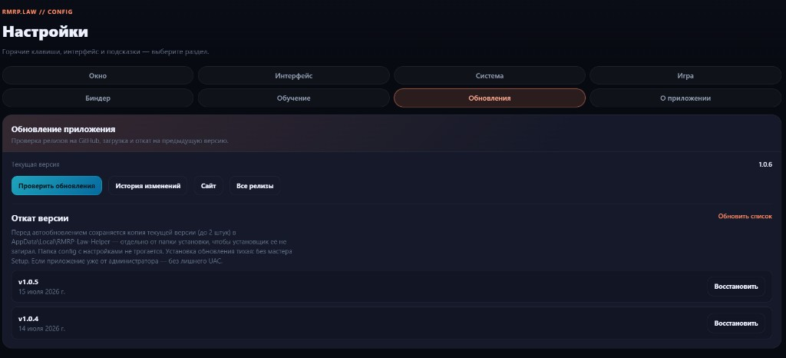

Автообновление
Установите приложение через Setup.exe — при выходе новой версии появится окно с загрузкой и установкой.
История версий подгружается из GitHub Releases. После установки Setup.exe приложение предлагает обновиться само.
Установите приложение через Setup.exe — при выходе новой версии появится окно с загрузкой и установкой.
Перед обновлением сохраняется резервная копия. В настройках приложения можно вернуться на предыдущую версию.
Тексты кодексов с форума RMRP обновляются из приложения — кнопка «Обновить» в окне законов и правил.
